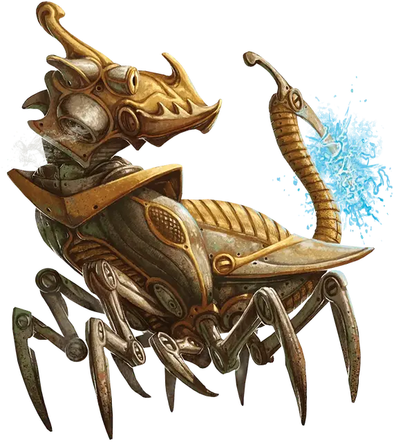

Шустроштука
Skitterwidget
Средний Конструкт

Класс Доспеха 18 (природный доспех)
Хиты 85 (10к8 + 40)
Скорость 30 футов, лазая 30 футов
| мод | спас | ||
|---|---|---|---|
| СИЛ | 16 | +3 | +3 |
| ЛОВ | 14 | +2 | +2 |
| ТЕЛ | 18 | +4 | +4 |
| мод | спас | ||
|---|---|---|---|
| ИНТ | 3 | −4 | −4 |
| МДР | 10 | +0 | +0 |
| ХАР | 1 | −5 | −5 |
Иммунитет к урону электричество, яд
Иммунитет к состояниям окаменение, ослепление, отравление, паралич, глухота, истощение
Чувства тёмное зрение 60 футов, пассивное Восприятие 10
Опасность 5 (1800 опыта)
Бонус мастерства +3
Особенности
Языки. Язык Шустроштук.
Поглощение электричества. Каждый раз, когда шустроштука должна получить урон электричеством, она не получает урон, и вместо этого восстанавливает число хитов, равное причиняемому урону электричеством.
Необычная природа. Шустроштуке не нужен воздух, еда, питье и сон.
Действия
Мультиатака. Шустроштука совершает две атаки: одну укусом и одну хвостом.
Укус. Рукопашная атака оружием:+6 к попаданию, досягаемость 5 футов, одна цель. Попадание: 10 (2к6 + 3) колющего урона. Если цель существо, то оно становится схваченным шустроштукой (Сл высвобождения 13).
Хвост. Рукопашная атака оружием: +6 к попаданию, досягаемость 5 футов, одна цель. Попадание: 6 (1к6 + 3) колющего урона плюс 10 (3к6) урона электричеством и если цель существо, то оно должно преуспеть в спасброске Телосложения Сл 15, иначе станет ошеломлённой до конца своего следующего хода.
Реакции
Хороший родитель. Шустроштука накладывает помеху на один бросок атаки, совершаемый против маленького шустрика, которого он может видеть в пределах 5 футов от себя.
Описание
Сделанные из металла и имеющие мимолетное сходство с гигантским тараканом с собачьей головой шустроштуки на удивление симпатичны. Двух совершенно одинаковых внешне шустроштук не бывает.
Скрежещущий язык. Шустроштуки общаются на своём собственном простом языке, состоящем из пронзительных скрежетов высокого тембра.
Кольцо контроля. Созданная шустроштука привязывается к магическому кольцу контроля и должно подчиняться командам настроенного на это кольцо. Оно понимает команды владеющего кольцом, как если бы они были произнесены на языке Шустроштук. На одно кольцо контроля можно привязать до семи созданных шустроштук .
Заботливые родители. Шустроштуки обладают способностью спариваться и размножаться, производя потомство которое выглядит даже симпатичнее своих родителей. Шустроштуки стремятся защитить находящихся рядом малых шустриков, независимо от того, они их родители или нет. При получении команды от своего хозяина, ставящую под угрозу жизнь одного или нескольких находящихся под его опекой шустриков, шустроштука может совершить спасбросок Харизмы Сл 5 игнорируя эту команду и все другие команды своего хозяина в течение 1 минуты в случае успеха.